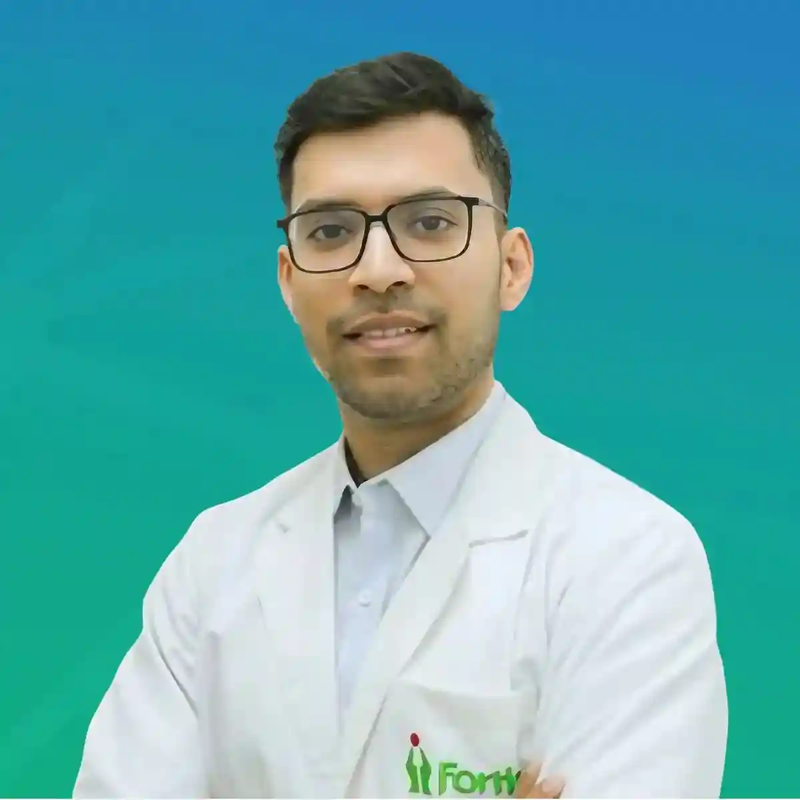
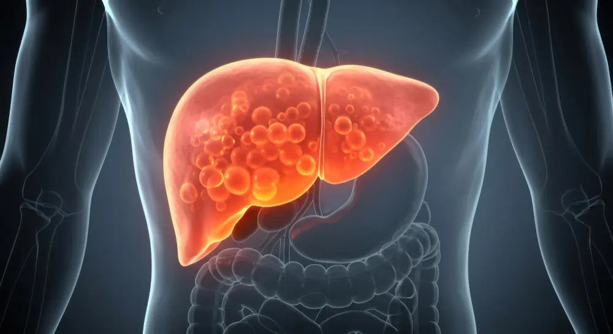

Fatty Liver Disease Symptoms, Stages & Treatment in India (2026 Guide)

Senior Liver Transplant & HPB Surgeon with 15+ years of clinical expertise.
25 Feb 2026

Fatty liver disease has quietly become one of India's most pressing public health concerns. With rising rates of obesity, diabetes, and sedentary urban lifestyles, millions of Indians are living with fat-laden livers — often without knowing it.
In fact, studies suggest that nearly 1 in 3 adults in urban India may have some degree of fatty liver disease. What makes this condition especially dangerous is that it shows no symptoms in its early stages, earning it the nickname "the silent disease."
This comprehensive 2026 guide covers everything you need to know — from types and stages of fatty liver to symptoms, causes, diagnosis, and treatment options available in India. Whether you've just been diagnosed or you're worried about your liver health, this guide will help you understand exactly where you stand and what steps to take.
What Is Fatty Liver Disease?
Fatty liver disease (medically known as hepatic steatosis) occurs when excess fat — more than 5-10% of the liver's weight — builds up inside liver cells. While a small amount of fat in the liver is normal, too much can interfere with liver function and, over time, lead to serious complications including liver failure and liver cancer.
The liver is one of the body's most vital organs, responsible for filtering toxins from the blood, producing bile for digestion, regulating blood sugar, and processing nutrients. When fat accumulates in liver cells, all of these critical functions can be compromised.
Types of Fatty Liver Disease
There are two main types of fatty liver disease, and understanding which type you have is important for determining the right treatment approach.
1. Alcoholic Fatty Liver Disease (AFLD)
As the name suggests, this type is directly caused by excessive and long-term alcohol consumption. Alcohol is toxic to liver cells, and the liver prioritises breaking down alcohol over other metabolic functions, which leads to fat accumulation. AFLD can progress rapidly — even a few weeks of heavy drinking can cause significant fat build-up.
2. Non-Alcoholic Fatty Liver Disease (NAFLD / MASLD)
This is the more common type in India and occurs in people who drink little or no alcohol. It is strongly associated with metabolic conditions such as obesity, type 2 diabetes, high cholesterol, and high blood pressure. Doctors now often refer to this condition as MASLD (Metabolic dysfunction-Associated Steatotic Liver Disease), reflecting its close link to metabolic health.
NAFLD/MASLD is the fastest-growing cause of liver disease globally and is now the leading reason for liver transplants in several countries, including India.
The 4 Stages of Fatty Liver Disease
Fatty liver is not a single condition — it is a spectrum that progresses through four distinct stages. Knowing which stage you are in determines urgency of treatment and available options.
Stage 1 — Simple Fat Accumulation (Steatosis)
At this earliest stage, fat has accumulated in the liver cells, but there is no inflammation or scarring yet. Most people at this stage have absolutely no symptoms, and the condition is often discovered accidentally during a routine blood test or ultrasound scan done for other reasons. The great news: Stage 1 is completely reversible with lifestyle changes alone.
Stage 2 — Liver Inflammation (Steatohepatitis)
At this stage, the excess fat has triggered inflammation within the liver. In non-alcoholic cases, this is called NASH (Non-Alcoholic Steatohepatitis) or MASH (Metabolic-Associated Steatohepatitis). The liver is now under active stress, and some patients may begin experiencing mild symptoms such as fatigue and discomfort in the upper right abdomen. Stage 2 is still largely reversible with proper medical care and lifestyle modifications.
Stage 3 — Liver Fibrosis (Scarring Begins)
Chronic inflammation starts to produce scar tissue within the liver. This scarring (fibrosis) replaces healthy liver tissue and begins to affect the liver's ability to function normally. While the liver has a remarkable ability to regenerate, significant fibrosis is harder to fully reverse. At this stage, medication and close medical monitoring are essential.
Stage 4 — Liver Cirrhosis (Irreversible Damage)
This is the most advanced and serious stage. The liver has become heavily scarred and hardened, and its ability to function is severely compromised. Cirrhosis can lead to life-threatening complications including liver failure, portal hypertension, internal bleeding, and liver cancer. At this stage, a liver transplant may be the only viable treatment option. Early diagnosis and intervention are critical to preventing the disease from reaching this point.
Symptoms of Fatty Liver Disease
One of the most dangerous aspects of fatty liver disease is that it rarely causes noticeable symptoms until it has reached an advanced stage. This is why many people are diagnosed only when the disease has already progressed.
Early Stage Symptoms (Stage 1 & 2)
Most people at these stages have no symptoms at all. Some may experience:
- Mild fatigue or low energy that is often dismissed as stress or poor sleep
- Vague discomfort or a sense of heaviness in the upper right side of the abdomen
- Slight nausea, especially after eating fatty or oily meals
Later Stage Symptoms (Stage 3 & 4)
As the disease progresses, symptoms become more noticeable and serious:
- Persistent fatigue and weakness
- Abdominal swelling (ascites) — fluid build-up in the belly
- Jaundice — yellowing of the skin and whites of the eyes
- Swelling in the legs and ankles (oedema)
- Confusion, memory problems, or difficulty concentrating (hepatic encephalopathy)
- Unexplained weight loss
- Dark-coloured urine and pale stools
- Easy bruising or bleeding
Warning Signs People Commonly Ignore
Many Indians attribute fatigue and mild abdominal discomfort to overwork, poor diet, or gastrointestinal issues and delay consulting a specialist. By the time a liver specialist is consulted, the disease may have already progressed to Stage 3 or 4. If you have risk factors for fatty liver (listed below), do not wait for symptoms — get tested proactively.
Common Causes & Risk Factors in India
Fatty liver disease does not develop overnight. It is typically the result of a combination of lifestyle, dietary, and metabolic factors that accumulate over time. Understanding your risk factors is the first step toward prevention and early detection.
Dietary Factors
- High consumption of refined carbohydrates — maida (refined wheat flour), white rice, white bread, biscuits
- Excess sugar intake — sweetened beverages, mithai (Indian sweets), packaged juices
- Frequent consumption of fried and processed foods — samosas, pakoras, namkeen, fast food
- Low fibre diet — insufficient fruits, vegetables, and whole grains
Lifestyle Factors
- Sedentary lifestyle — desk jobs, minimal physical activity
- Lack of regular exercise — less than 150 minutes per week of moderate activity
- Disturbed sleep patterns, which affect metabolic health
- High stress levels, which increase cortisol and promote fat storage
Medical Conditions
- Type 2 diabetes or insulin resistance — a major driver of NAFLD in India
- Obesity or being overweight, especially abdominal (belly) fat
- High blood cholesterol or triglycerides
- High blood pressure (hypertension)
- Polycystic ovary syndrome (PCOS) in women
- Hypothyroidism
Alcohol Consumption
- Regular alcohol consumption, even in moderate amounts, can contribute to fatty liver
- Binge drinking is particularly damaging, even in otherwise healthy individuals
Genetic Predisposition
- A family history of liver disease or metabolic conditions increases your risk
- Certain genetic variations make some individuals more susceptible to fat accumulation in the liver
How Is Fatty Liver Diagnosed?
If your doctor suspects fatty liver disease, they will recommend a series of tests to confirm the diagnosis and assess its severity. Early diagnosis is critical — the earlier it is caught, the better the chances of reversal or effective management.
Blood Tests (Liver Function Tests / LFTs)
A standard liver function test measures levels of liver enzymes (ALT, AST, GGT) in the blood. Elevated enzyme levels can indicate liver inflammation or damage. However, blood tests alone cannot confirm fatty liver or determine its stage — additional imaging is needed.
Abdominal Ultrasound
An ultrasound is typically the first imaging test used to detect fatty liver. It is non-invasive, affordable, and widely available in India. Ultrasound can identify fat deposits in the liver, though it may not detect mild cases or accurately assess the degree of fibrosis.
FibroScan & Liver Elastography
FibroScan is a specialised, non-invasive test that uses ultrasound-based vibration technology to measure the stiffness of the liver. Liver stiffness is a key indicator of fibrosis (scarring). This test is highly accurate for staging fatty liver disease, particularly in distinguishing between stages, and it is painless and takes only a few minutes.
MRI / CT Scan
Advanced imaging such as MRI-PDFF (Proton Density Fat Fraction) can precisely quantify the amount of fat in the liver and is particularly useful in complex cases. CT scans may also be used but involve radiation exposure.
Liver Biopsy
A liver biopsy — where a small sample of liver tissue is taken using a needle — remains the gold standard for definitively diagnosing and staging fatty liver disease, particularly NASH/MASH. It can accurately determine the degree of inflammation, fibrosis, and fat accumulation. While minimally invasive, it is typically reserved for cases where non-invasive tests are inconclusive.
Treatment Options for Fatty Liver Disease in India
The treatment approach for fatty liver disease depends significantly on its stage and underlying causes. There is no single "magic pill" — treatment is multi-pronged and requires sustained commitment.
Stage 1 & 2: Lifestyle Modification is the Foundation
For early-stage fatty liver, lifestyle changes are the most effective — and often the only — treatment needed. Studies show that losing just 7-10% of body weight can significantly reduce liver fat, inflammation, and fibrosis.
- Regular exercise: Aim for at least 150 minutes of moderate aerobic exercise per week (brisk walking, cycling, swimming)
- Weight loss: Even modest weight reduction has a dramatic effect on liver fat
- Dietary overhaul: Eliminate refined sugars, processed foods, and fried items (see diet section below)
- Alcohol cessation: Complete abstinence from alcohol is strongly advised
- Blood sugar control: Managing diabetes and insulin resistance is critical for NAFLD patients
Medical Management
While there is currently no FDA-approved drug specifically for NASH/MASH in India, several medications are used to address underlying conditions and manage the disease:
- Metformin — for diabetic patients with insulin resistance
- Vitamin E — has shown some benefit as an antioxidant in non-diabetic NASH patients
- Statins — for managing high cholesterol levels
- Obeticholic acid and newer NASH-specific drugs currently in clinical trials
Your liver specialist will tailor a medication plan based on your specific condition, underlying illnesses, and overall health profile.
Advanced Stages: When Surgical Intervention Is Needed
In Stage 3 and Stage 4 (cirrhosis), medical and lifestyle management alone may be insufficient. At this point, specialist surgical care becomes critical:
- Management of complications such as portal hypertension, variceal bleeding, and ascites
- Screening for liver cancer (hepatocellular carcinoma), which develops in 1-5% of cirrhosis patients per year
- Liver transplant evaluation for patients with end-stage liver disease or liver failure
A liver transplant offers the only complete cure for advanced cirrhosis caused by fatty liver disease. The procedure replaces the damaged liver with a healthy liver from a donor, giving patients a new lease on life. Dr. Ashish George and the team at Fortis Hospital, Delhi have performed over 1,000 successful liver transplants with a 92-95% success rate.
Indian Diet Tips to Reverse Fatty Liver
Diet plays a central role in both the development and reversal of fatty liver disease. The good news for Indian patients is that traditional Indian food, when prepared the right way, can be incredibly liver-friendly.
Foods to Include
- Whole grains: Brown rice, whole wheat rotis, oats, millets (jowar, bajra, ragi)
- Vegetables: Leafy greens (spinach, methi), bitter gourd (karela), drumsticks, broccoli, cabbage
- Fruits: Papaya, guava, amla (Indian gooseberry), berries — in moderation due to natural sugars
- Legumes: Dal (lentils), chickpeas, kidney beans — excellent protein sources with low glycaemic index
- Healthy fats: Olive oil, mustard oil (in small quantities), nuts (walnuts, almonds), seeds (flaxseeds)
- Turmeric (haldi): Contains curcumin, which has powerful anti-inflammatory and liver-protective properties
- Coffee: Research shows 2-3 cups of black coffee per day is associated with lower risk of liver fibrosis
- Green tea: Rich in antioxidants that protect liver cells
Foods to Strictly Avoid
- Maida (refined flour): Bread, biscuits, samosas, naan, pizza bases, pastries
- Refined sugar: Packaged juices, soft drinks, sweets, mithai, ice cream
- Fried foods: Pakoras, poori, bhatura, chips, namkeen
- Alcohol: All forms of alcohol are harmful to a fatty liver — even small amounts
- Red meat and processed meats: Limit consumption significantly
- Packaged and ultra-processed foods: Ready-to-eat meals, instant noodles, microwave popcorn
- High-sodium foods: Pickles, papads, canned foods
Practical Tips for Indian Eating Habits
- Switch from white rice to brown rice or millet-based alternatives
- Use air-frying or steaming instead of deep-frying
- Replace sugary chai with herbal teas or black coffee
- Choose homemade food over restaurant and takeaway meals whenever possible
- Practice portion control — even healthy foods can contribute to weight gain in excess
Can Fatty Liver Be Reversed?
This is the question most patients ask first — and the answer depends on the stage at which the disease is caught.
| Stage | Reversibility | What It Takes |
|---|---|---|
| Stage 1 (Steatosis) | Fully Reversible | Lifestyle changes alone |
| Stage 2 (NASH/Inflammation) | Largely Reversible | Lifestyle changes + medical management |
| Stage 3 (Fibrosis) | Partially Manageable | Specialist care + medication + lifestyle |
| Stage 4 (Cirrhosis) | Not Reversible | Liver transplant may be required |
The most important takeaway: the earlier you catch it, the better your chances of a full recovery. Do not wait for symptoms to appear.
When Should You See a Liver Specialist?
You should see a liver specialist (hepatologist) if any of the following apply to you:
- Your blood test shows elevated liver enzymes (ALT, AST)
- An ultrasound has detected a fatty or enlarged liver
- You have been diagnosed with type 2 diabetes, obesity, or metabolic syndrome
- You drink alcohol regularly and have concerns about your liver health
- You have a family history of liver disease, cirrhosis, or liver cancer
- You are experiencing persistent fatigue, abdominal pain, or unexplained weight changes
- You have been told you have NAFLD/MASLD and want expert guidance on next steps
A liver specialist can accurately stage your disease, create a personalised treatment plan, and monitor your progress over time. General physicians and gastroenterologists can diagnose fatty liver, but a dedicated HPB (Hepato-Pancreato-Biliary) specialist offers the most comprehensive care, particularly for advanced cases.
Frequently Asked Questions (FAQs)
Is fatty liver disease dangerous?
Yes, if left untreated, fatty liver disease can progress to liver cirrhosis and liver failure, both of which are life-threatening. However, when caught early, it is highly manageable and often fully reversible.
Can fatty liver cause liver cancer?
Yes. Patients with advanced fatty liver disease (cirrhosis stage) have a significantly elevated risk of developing hepatocellular carcinoma (liver cancer). Regular screening with ultrasound and AFP blood tests every 6 months is recommended for cirrhosis patients.
How long does it take to reverse fatty liver?
With consistent lifestyle changes, patients with Stage 1 fatty liver can see measurable improvement in liver fat within 3-6 months. Stage 2 (NASH) may take 12-24 months of sustained effort. The key is consistency — the liver responds remarkably well when given the right conditions.
Is fatty liver common in India?
Yes, extremely. Studies estimate that approximately 25-38% of the Indian population has non-alcoholic fatty liver disease. Urban Indians are particularly at risk due to changing dietary patterns, sedentary desk jobs, rising diabetes rates, and increasing alcohol consumption.
Can thin people get fatty liver?
Yes. While obesity is a major risk factor, fatty liver disease can also affect lean individuals — this is known as "lean NAFLD" and is more common in Asia than in Western countries. This is why metabolic health (blood sugar, cholesterol, and liver enzyme levels) is a more reliable indicator than body weight alone.
Do I need a liver transplant for fatty liver?
The vast majority of fatty liver patients do not need a liver transplant. Transplant is only considered in advanced cirrhosis with liver failure or when the liver can no longer perform its functions adequately. Early diagnosis and treatment almost always prevent the disease from reaching this stage.
Conclusion: Early Detection Is Your Best Defence
Fatty liver disease is one of the most common — yet most preventable — liver conditions in India. The fact that it shows no symptoms in its early stages makes proactive screening all the more important, especially if you have risk factors such as diabetes, obesity, or a family history of liver disease.
The liver is a remarkably resilient organ. Given the right support — through diet, exercise, and medical care — it can recover from significant damage. But it needs the chance to do so.
If you have been diagnosed with fatty liver, or if you suspect you might be at risk, do not delay. The difference between Stage 1 and Stage 4 is often just a matter of time — and early intervention can mean the difference between a full recovery and the need for a liver transplant.